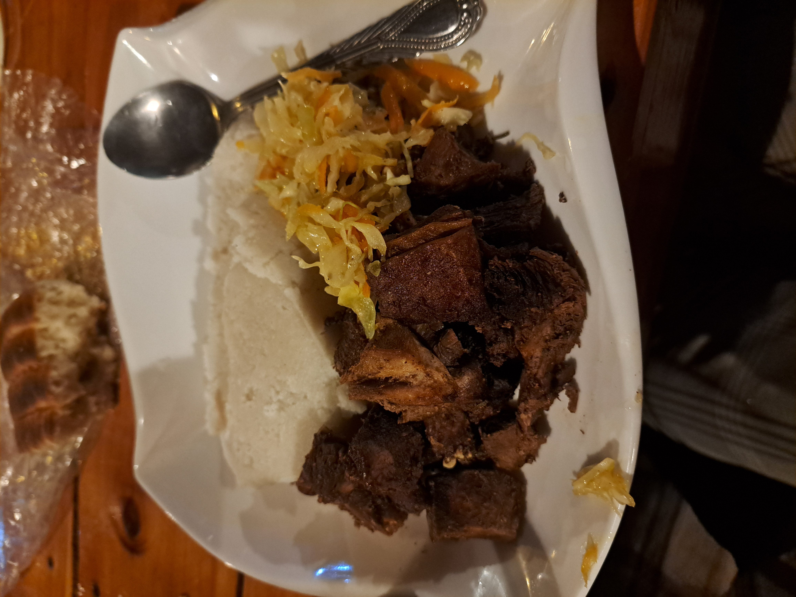
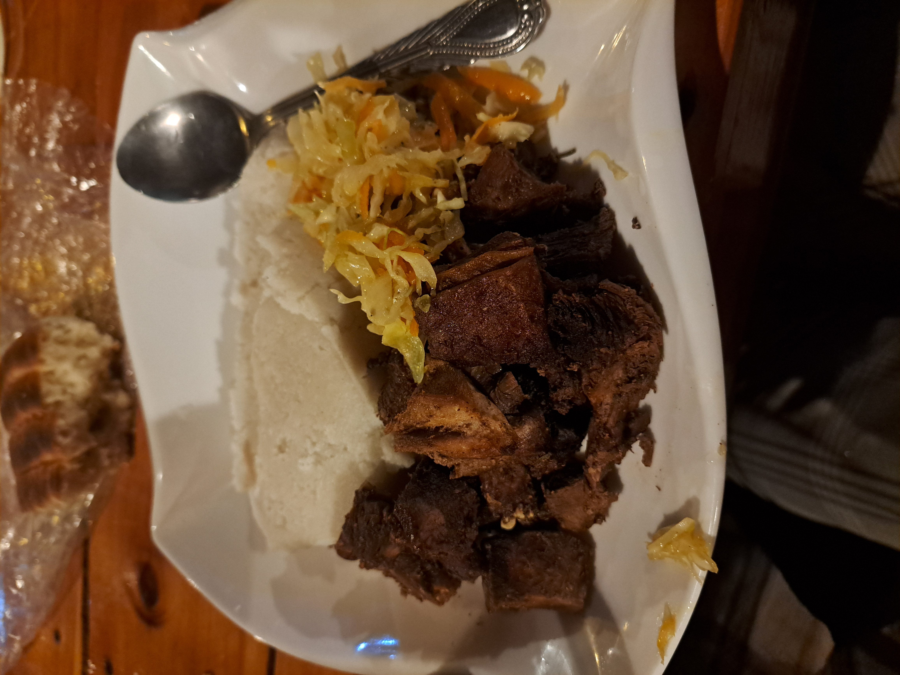

Starting my coding journey at AkiraChix has been nothing short of a thrilling experience. The first week, especially, was a rollercoaster ride of emotions, challenges, and achievements that set the stage for the intense learning process to come. The first day was a day of anticipation and rather a lot of nervousness. When I arrived, I was greeted by a room full of happy alumni faces. And because I arrived on Friday night, the weekends were full of basic sessions. Including discussions on the safeguarding policy. We even did a role play about it.

The food in AkiraChix is somewhat different from the kinds of foods I used to eat in my country, Ethiopia. And I thought that would be a big problem, actually it was for sometime because I could not get used to some of the Kenyan foods but then I realised that the food is adaptable. And I’m becoming quite fond of it.
Here are some pictures of the food we usually eat at the campus.
 

The first week of AkiraChix was a transformative experience. It was a week of learning and bonding with fellow future software developers, UI designers and product managers. The intensive, immersive nature of the campus ensured that I was always engaged and motivated. In hindsight, I can confidently say that this first week laid a good foundation for the way forward, and I am set to continue growing and learning in the coming weeks.